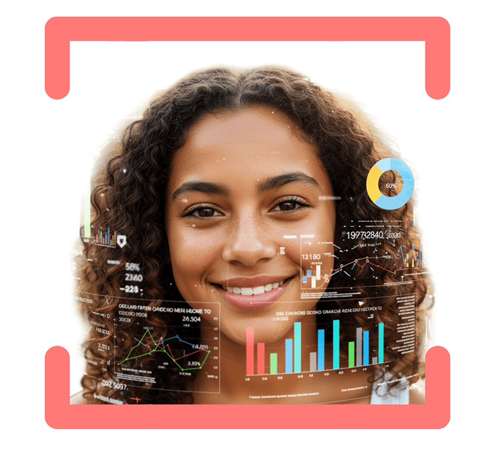
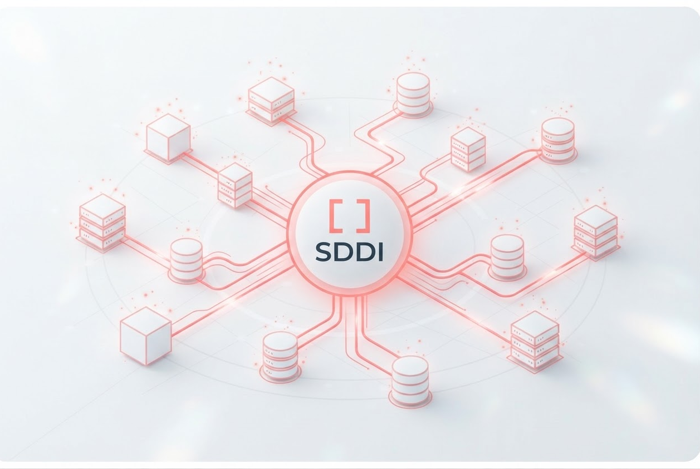
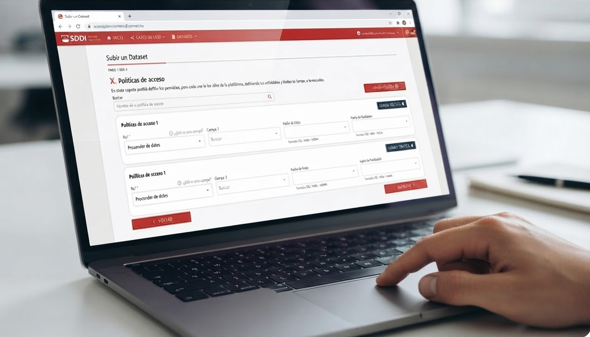

Está respaldado y financiado por el Ministerio para la Transformación Digital y de la Función Pública, a través de la Secretaría de Estado de Digitalización e Inteligencia Artificial.
SDDI: Social Data Driven Impact
El primer Espacio de Datos en España especializado en el sector social
Datos que impulsan el cambio social y demuestran impacto

[
Únete a la revolución de la confianza
]Con SDDI tanto entidades sociales como organismos financiadores ahorran tiempo, reducen costes y convierten la gestión de los datos en un proceso sencillo, generando confianza, oportunidades y crecimiento en comunidad

Más de 220 Entidades Sociales y Organismos Financiadores forman parte ya de SDDI
01 — Qué es SDDI
SDDI: Social Data Driven Impact
Big data para resolver desafíos sociales
SDDI es el primer espacio seguro y ético en España, diseñado para la gestión de datos de proyectos del sector social. Una herramienta que facilita dicha gestión ayudando a transformar mera información en datos valiosos que maximizan el impacto social de tus proyectos.
Seguridad y confianza
Tus datos son tuyos y de las personas beneficiarias de tus proyectos. En SDDI la seguridad no es un añadido, es la base.
Cumple con los principales marcos europeos: RGPD, Ley de Gobernanza de Datos, Data Act e IA Act, garantizando seguridad, interoperabilidad y confianza.
Se trata de un ecosistema pionero en España, con visión europea, alineado con la Estrategia Europea de Datos y en el que ya se encuentran más de 220 entidades sociales.
Infraestructura garantizada e impulsada por GRUPO neoCK, referente en tecnología social; especialista en proyectos públicos y del tercer sector desde hace más de 10 años.
Modelo de gobernanza
Soberanía, seguridad y transparencia
La gobernanza es el conjunto de normas, procesos y responsabilidades que permiten que todas las organizaciones participantes colaboren en SDDI de forma segura, transparente y equitativa. Su objetivo es garantizar que cada entidad mantenga el control sobre sus datos mientras participa en un ecosistema basado en la confianza y la colaboración.
Documentación oficial
Descarga la documentación
Modelo de Gobernanza de SDDI
Normas de Acceso y Seguridad
Marco legal y cumplimiento (RGPD, Data Act)
Política 0 spam. Tus datos están seguros y solo se utilizarán para ofrecer información relacionada con este proyecto.
Recíbela ahora mismo
Introduce tu correo y te enviaremos toda la información disponible para consulta.
02 — beneficios
Espacio de datos - más que un repositorio
Comparte · Analiza · Impacta
En SDDI, cada organización conserva el control sobre sus datos mientras participa en un entorno común que facilita el intercambio seguro de información, la interoperabilidad entre sistemas y la generación de conocimiento compartido.
Soberanía
Tú decides sobre tus datos
Tus datos, siempre bajo tu control
Cada organización decide qué comparte, con quién y para qué. SDDI garantiza la seguridad y trazabilidad de la información.
Gobernanza y autonomía
Comparte datos con reglas de acceso definidas, manteniendo siempre el control sobre tu información.
Soberanía del dato
Mantén el control sobre quién accede a tus datos y cómo pueden utilizarse.
Confianza
Conexión segura y auditable
Colaboración segura
Integración con cualquier sistema mediante conectores y estándares abiertos, como Gaia-X, Eclipse e IDSA.
Seguridad
Protección de extremo a extremo mediante identidades federadas y estándares europeos.
Trazabilidad
Registra y audita todas las operaciones realizadas sobre los datos.
Impacto
Del dato al valor compartido
Analítica e inteligencia artificial
Convierte los datos en indicadores y conocimiento para apoyar la toma de decisiones.
Medición del impacto social
Evalúa programas mediante indicadores comunes y automatiza el seguimiento de resultados.
Ecosistema colaborativo
Colabora con entidades sociales, administraciones, universidades y empresas en un entorno común.
03 — cómo funciona
Del registro al impacto
Cinco pasos para conectar, compartir y generar valor
SDDI acompaña a las organizaciones durante todo el ciclo de vida del dato. Desde la incorporación al espacio de datos hasta la utilización de casos de uso compartidos, la plataforma permite transformar la información en conocimiento y generar mayor impacto social.
1
Solicita tu incorporación
Comienza el proceso de adhesión al espacio de datos mediante la firma del acuerdo de participación y la aceptación del modelo de gobernanza, que establece las reglas para compartir y utilizar los datos de forma segura.
2
Conecta tus sistemas
Integra tus bases de datos y aplicaciones con SDDI mediante conectores interoperables. Nuestro equipo te acompaña para que la conexión sea sencilla y adaptada a la realidad tecnológica de tu organización.

3
Publica tus productos de datos
Organiza y publica conjuntos de datos o productos de datos para que otras entidades autorizadas puedan descubrirlos y utilizarlos según las condiciones que tú mismo definas.

4
Adquiere y comparte información
Accede al catálogo de productos de datos publicados por otras organizaciones participantes y reutiliza la información disponible para enriquecer tus proyectos y mejorar la toma de decisiones.
5
Genera valor con casos de uso
Utiliza los datos compartidos a través de las soluciones y casos de uso de SDDI para analizar información, medir impacto, aplicar inteligencia artificial y desarrollar nuevos servicios para tu organización.
04 — casos de uso
Casos que ya están cambiando el sector
Líderes en tecnología para el impacto social
Descubre cómo diferentes alianzas de organizaciones ya están utilizando SDDI para compartir información valiosa y generar un impacto transformador basado en evidencias reales.

Inteligencia Laboral
Conecta talento, formación y oportunidades
Analiza el recorrido de las personas desde la formación hasta el empleo mediante indicadores, cuadros de mando e inteligencia de datos. Ayuda a mejorar los procesos de orientación, inserción laboral y toma de decisiones basadas en evidencia.

neoIMPACT ESG
Sostenibilidad y economía circular
Conecta a los actores de la cadena de valor textil para compartir datos de trazabilidad, reutilización y reciclaje de prendas. Este caso de uso facilita la medición del impacto ambiental y social, impulsa la economía circular y mejora la colaboración entre organizaciones comprometidas con la sostenibilidad.

Social Tech Data
Impulsando el emprendimiento social
Mide el impacto de los programas de emprendimiento y mentoring. La compartición segura e interoperable de información permite generar indicadores comunes, evaluar resultados y mejorar la toma de decisiones basada en evidencia.

Career Trainers Space
Orientación con evidencia
Evalúa el impacto de la orientación educativa, vocacional y profesional. La integración segura de datos facilita el seguimiento de los itinerarios, la automatización de indicadores y la mejora continua de los servicios de orientación.
05 — financiación
Un proyecto respaldado por Europa
Financiado por la Unión Europea – NextGenerationEU
SDDI se desarrolla gracias al apoyo del Programa Espacios de Datos Sectoriales, impulsado por el Ministerio para la Transformación Digital y de la Función Pública en el marco del Plan de Recuperación, Transformación y Resiliencia – NextGenerationEU. El proyecto forma parte de la estrategia nacional para acelerar la digitalización de sectores estratégicos mediante el desarrollo de espacios de datos seguros, interoperables y alineados con la Estrategia Europea de Datos.
Presupuesto financiable
1.586.854 €Subvención concedida
952.111 €60 % del presupuesto financiableObjetivos
Generar conocimiento
Obtén información rigurosa y actualizada para comprender mejor la realidad de la educación, el empleo y el emprendimiento.
Mejorar las políticas públicas
Facilita la toma de decisiones mediante datos y evidencias que permitan diseñar políticas más eficaces.
Adaptar las intervenciones
Diseña programas ajustados a las necesidades reales y a las oportunidades de cada territorio y colectivo.
Definir perfiles profesionales
Identifica las competencias y requisitos de los perfiles profesionales más adecuados para cada ámbito de actuación.
Detectar brechas de talento
Analiza las diferencias entre los perfiles disponibles y los perfiles demandados para anticipar necesidades.
Conectar oferta y demanda
Facilita el encuentro entre profesionales, organizaciones y oportunidades de empleo.
Impulsar el desarrollo profesional
Identifica necesidades formativas y promueve el upskilling de los profesionales de la orientación.
Medir el impacto social
Evalúa los resultados de iniciativas de educación, empleo y emprendimiento mediante indicadores comunes.
Facilitar la financiación evidenciada
Aporta datos para mejorar convocatorias y acceder a nuevas oportunidades de financiación.
Resultados esperados
Intercambio de datos confiable, seguro y ético bajo estándar IDSA.
Infraestructura IDSA
Intercambio de datos entre agentes bajo estándares internacionales.
Dos casos de uso
«Social Tech Data» y «Career Trainers Space» en marcha.
Ecosistema en crecimiento
Nuevos servicios que atraen participantes y aseguran continuidad.
Financiado por la Unión Europea – NextGenerationEU. Sin embargo, los puntos de vista y las opiniones expresadas son únicamente responsabilidad de Grupo neoCK y no reflejan necesariamente los de la Unión Europea o la Comisión Europea.
06 - el equipo
Grupo neoCK
Líderes en tecnología para el impacto social
Detrás de SDDI está GRUPO neoCK, empresa del cuarto sector especializada en el desarrollo de soluciones para el sector social, con más de 20 años impulsando tecnología social al servicio de entidades financiadores
Hemos invertido más de 1,5 millones de euros en crear SDDI: la primera infraestructura de gestión datos para el impacto social en España.
Un espacio pionero, respaldado y cofinanciado por el Ministerio para la Transformación Digital y alineada con la Estrategia Europea de Datos.
SDDI es la seguridad, la ética y la tranquilidad de trabajar en un entorno especializado
conoce más sobre neoCK
06 — FAQ
Preguntas frecuentes
[
Únete al futuro del impacto social
]Da el primer paso hoy. Déjanos tu correo, reserva una demo y descubre cómo tu entidad puede sumarse al Espacio de Datos social nº 1 de España.